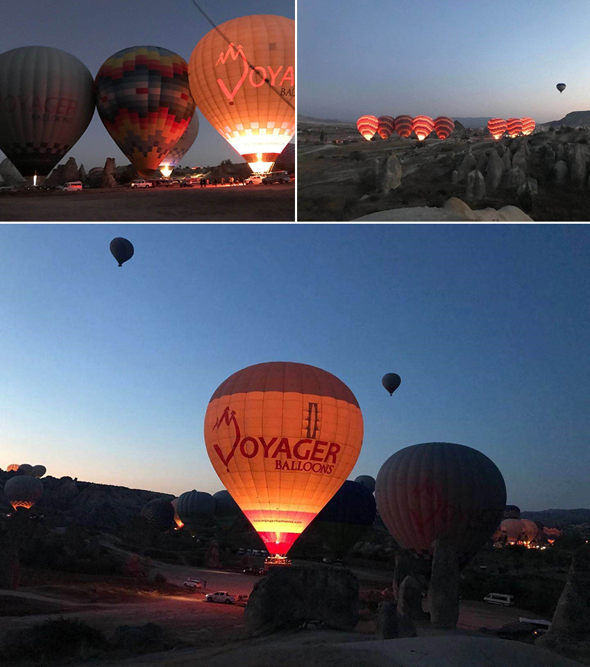
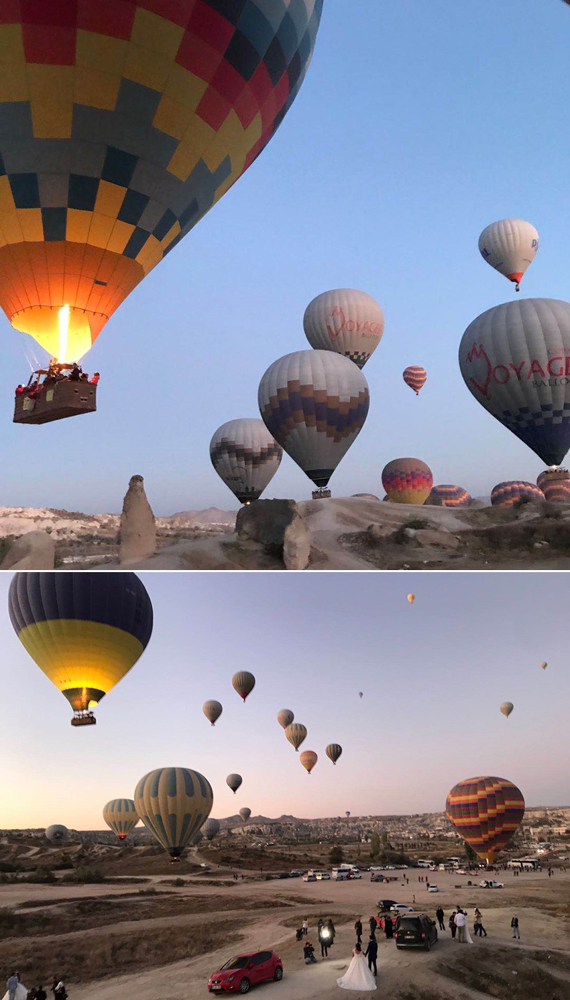
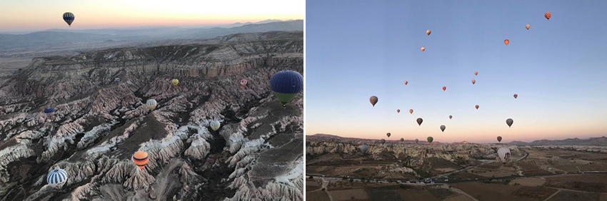
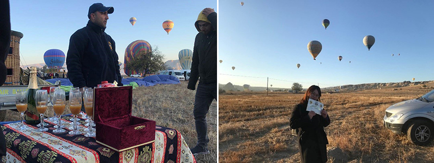
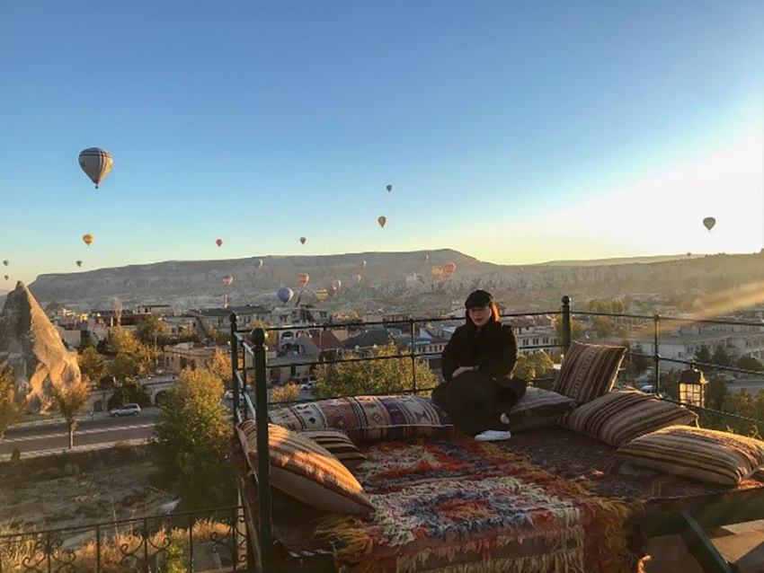

土耳其，給人的第一印象浪漫不曉得為什麼是浪漫，可能是因為卡帕多奇亞(Cappadocia)的熱氣球景象給人有夢幻的感覺，而有浪漫的感覺。
位於土耳其中西部安那托利亞高原的卡帕多奇亞，大約於200萬年前，火山噴發，火山岩漿覆蓋了卡帕多奇亞地區，岩漿冷卻後，留下了石灰岩，在曠野裡挺立著，故以特殊客斯特火山地形聞名，卡帕多奇亞擁有百萬年形塑的奇幻地貌景觀，由上下俯瞰，有著言語說不出來的壯觀，所以卡帕多奇亞的熱氣球堪稱是世界最美、最熱門。
但要能搭上世界最美、最熱門的熱氣球，其實也不簡單，由於卡帕多奇亞位於土耳其中部，從西北方的伊斯坦堡至卡帕多奇亞車程需要12個小時(約800公里)，加上搭乘人數眾多，不易預定，問了幾間旅行社都被告知已客滿，直到找到土而其當地的旅行社，才預定到熱氣球搭乘。再者，順利起飛的機率不高(只要有一點風，當地民航局就會取消飛行，恐怕讓很多人無法搭乘)，所以自認自己很幸運，能在秋冬這麼不穩定的季節搭上熱氣球，可能是上輩子累積來的福份。
然而，搭乘當天凌晨，當地政府會以當天天氣判斷是否滿足飛行條件，才會通知熱氣球是否飛行。於凌晨五點就須前往搭乘熱氣球地點，真的令人印象很深刻，當天凌晨大約是氣溫零度，搭上旅行團所安排的交通車，心中仍擔心會不會臨時取消，到達熱氣球飛行地點後，在草地上吃著早餐，喝著熱熱的咖啡，看著遠方許多人把熱氣球由貨車上拖下，開始充氣、點火，隨之熱氣球馬上變鼓了，心中有踏實感，等等能搭上熱氣球了，卡帕多奇亞沒白來了，雖然當下覺得很冷，但心中很溫暖，真的只有感動。
|  |
隨後，工作人員指派我們到特定的熱氣球，踏上熱氣球籃子中，抓著籃子裡的手把，熱氣球隨之升空，心中好興奮，俯瞰著卡帕多奇亞的奇妙奇景。同時也有許多熱氣球起飛。也有人趁著起飛的時刻，抓緊時間拍攝婚紗照，捕捉浪漫的畫面。
|  |
駕駛員技巧性駕駛熱氣球，熱氣球忽高忽低，讓我們可以從不同角度看著壯觀的客斯特火山地形。熱氣球飛到很高很高的時候，只能說太壯觀了！拍照紀錄的同時，也很怕手機掉下去。隨著高度升高，拉開我們與其他熱氣球的距離。
|  |
最後，熱氣球降落於草地當中，我們在草地上從籃子爬出來，這種體驗很奇特，為了慶祝飛行成功，工作人員還準備香檳，開香檳慶祝，最後，還有一張飛行完成的獎狀。
|  |
除了熱氣球外，卡帕多奇亞也以洞穴屋聞名，當地人大多居住於洞穴屋，除了奇特地形外，也可免於外敵的攻擊，因此，體驗一下洞穴屋也是來卡帕多奇亞該做的事。在卡帕多奇亞的飯店除了都是洞穴屋外，多半的飯店的頂樓，都有一個很好拍照的網美景點，土耳其地毯加上熱氣球，美極了。
|  |
卡帕多奇亞，是我在土耳其旅行的其中一個景點，是最期待的，這個感覺好像完成人生理想之一，看到了世界上排名的十大奇景，成功解鎖！